Keyless Starting System: Testing and Inspection
Inspection
Self Diagnosis With GDS
Smart key system defects can be quickly diagnosed with the GDS. GDS operates actuator quickly to monitor, input/output value and self diagnosis.
The following three features will be major problem in SMART KEY system.
1. Problem in SMART KEY unit input.
2. Problem in SMART KEY unit.
3. Problem in SMART KEY unit output.
The following three diagnostic solutions will be the main solution process to a majority of concerns.
1. SMART KEY unit Input problem : switch diagnosis
2. SMART KEY unit problem : communication diagnosis
3. SMART KEY unit Output problem : antenna and switch output diagnosis
Switch Diagnosis
1. Connect the cable of GDS to the data link connector in driver side crash pad lower panel, turn the power on GDS.
2. Select the vehicle model and then SMART KEY system.
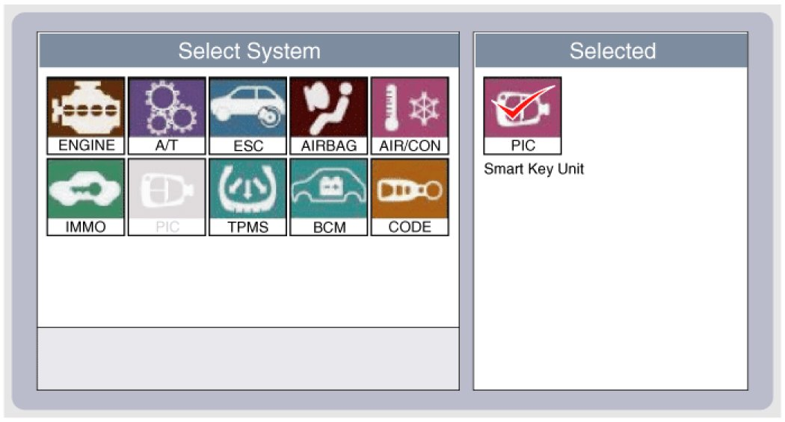
3. Select the "SMART KEY unit".
4. After IG ON, select the "Current data".
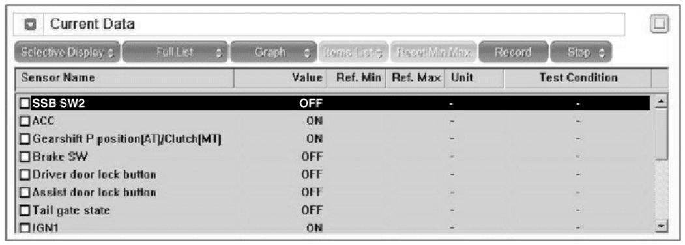
5. You can see the situation of each switch on scanner after connecting the "current data" process.
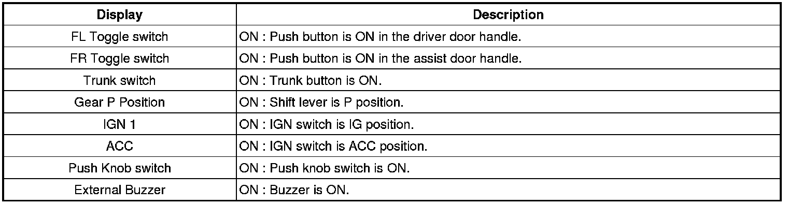
Communication Diagnosis With GDS (Self Diagnosis)
1. Communication diagnosis checks that the each linked components operates normal.
2. Connect the cable of GDS to the data link connector in driver side crash pad lower panel.
3. After IG ON, select the "DTC".
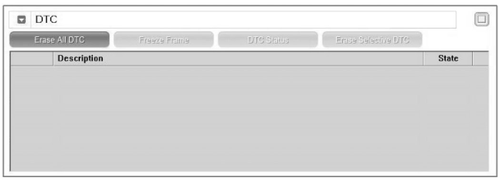
Antenna Actuation Diagnosis
1. Connect the cable of GDS to the data link connector in driver side crash pad lower panel.
2. After IG ON, select the "ACTUATION TEST".
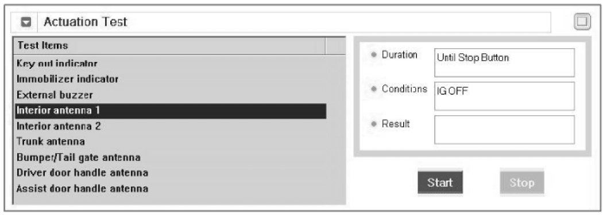
3. Set the smart key near the related antenna and operate it with a GDS.
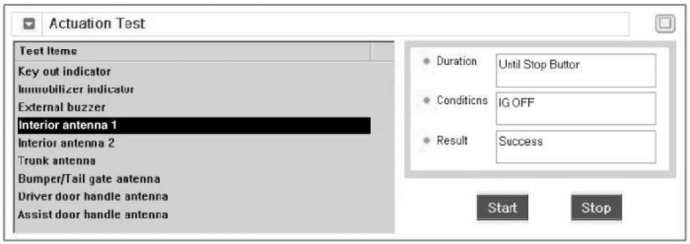
4. If the LED of smart key is blinking, the smart key is normal.
5. If the LED of smart key is not blinking, check the voltage of smart key battery.
6. Antenna actuation
A. INTERIOR Antenna 1
B. INTERIOR Antenna 2
C. Trunk antenna
D. BUMPER/Antenna
E. DRV_DR Antenna
F. AST_DR Antenna
Antenna Status Check
1. Connect the cable of GDS to the data link connector in driver side crash pad lower panel.
2. Select the "Antenna Status Check".
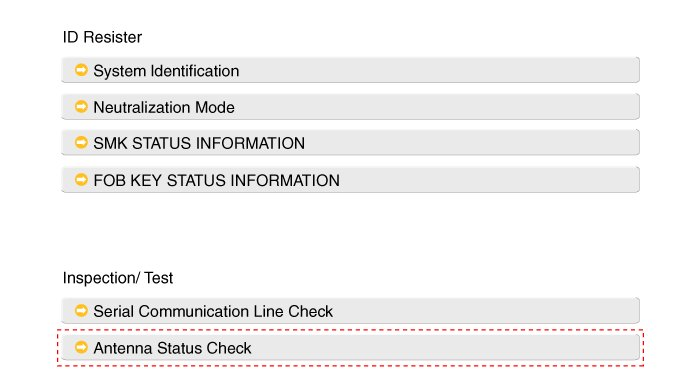
3. After IG ON, select the "Antenna Status Check".
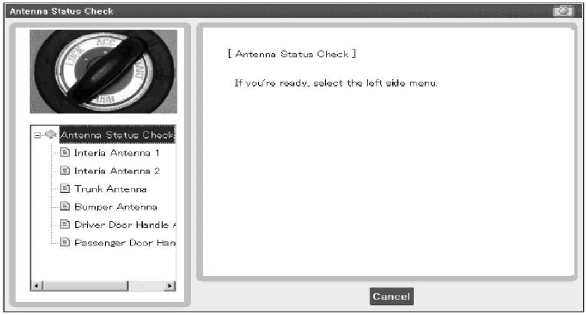
4. Set the smart key near the related antenna and operate it with a GDS.
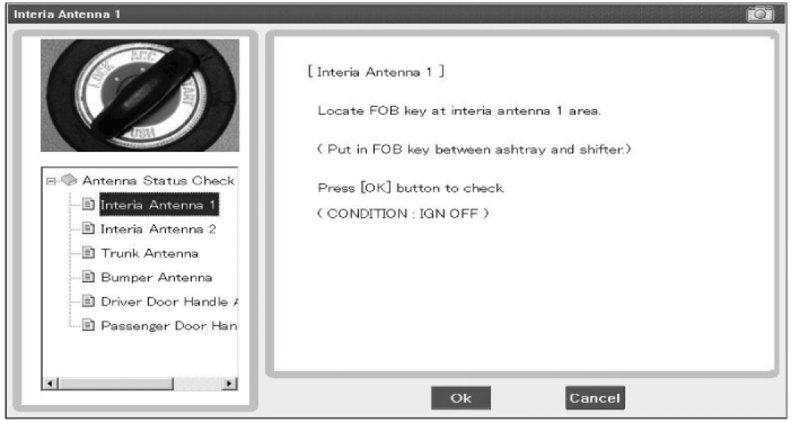
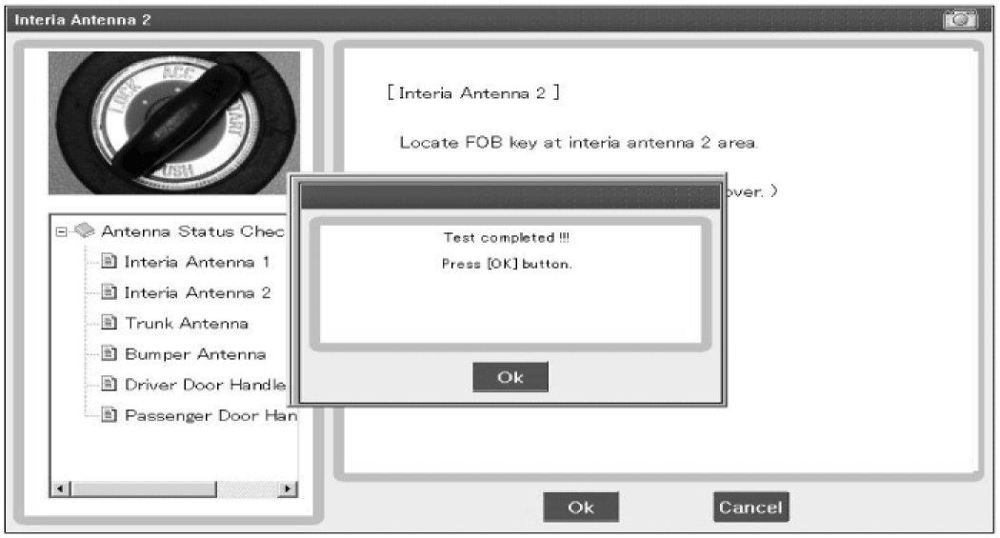
5. If the smart key runs normal , the related antenna, smart key(transmission, reception) and exterior receiver are normal.
6. Antenna status
A. INTERIOR Antenna 1
B. INTERIOR Antenna 2
C. Trunk antenna
D. BUMPER/Antenna
E. DRV_DR Antenna
F. AST_DR Antenna
Serial Communication Status Check
1. Connect the cable of GDS to the data link connector in driver side crash pad lower panel.
2. Select the "Serial Communication Line Check".
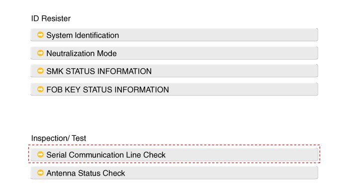
3. After IGN ON, select the "Receiver Communication Line Check".
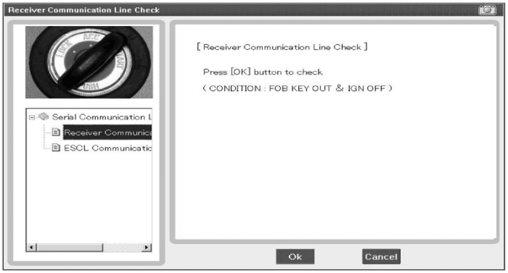
4. Check the serial communication line with a GDS.
5. If the smart key runs normal, the communication of smart key unit, exterior receiver are normal.
6. If the smart key runs abnormal, check the following items.
A. Disconnection or no response of the exterior receiver communication line.
B. The exterior receiver communication line disconnection and ground connection.
Interior Antenna Actuation Check
1. Set the smart key in the following shade area and check the IG ON.
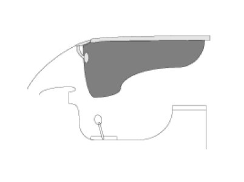
2. If the ignition is ON, the antenna runs normal.
3. Check the interior antenna ignition mode.
4. Set the smart key in the following shade area and actuate the antenna. Check the LED of smart key is blinking.
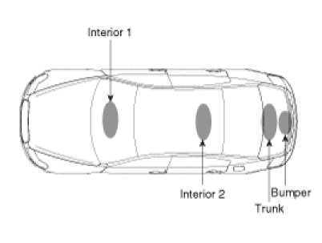
5. If the LED of smart key is not blinking, check the antenna in shade area.
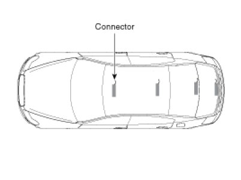
FOB Status Check
1. Connect the cable of GDS to the data link connector in driver side crash pad lower panel.
2. After IGN ON, select the "FOB KEY STATUS INFO".
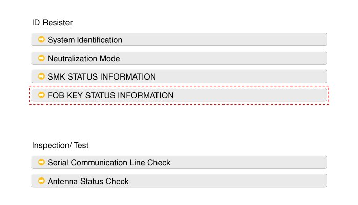
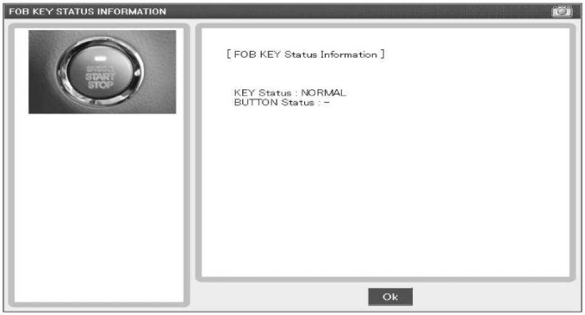
Smart Key Status Check
1. Connect the cable of GDS to the data link connector in driver side crash pad lower panel.
2. After IGN ON, select the "SMK STATUS INFO".
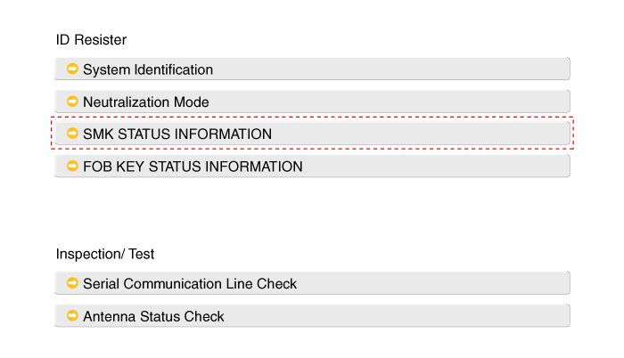
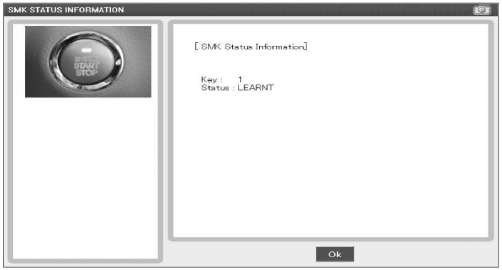
Neutralization Status Check
1. Connect the cable of GDS to the data link connector in driver side crash pad lower panel.
2. After IGN ON, select the "Neutralization mode".
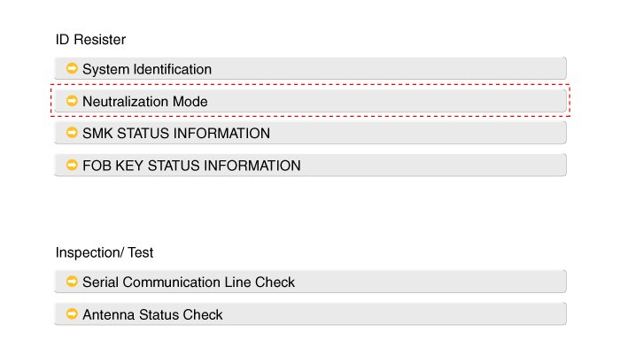
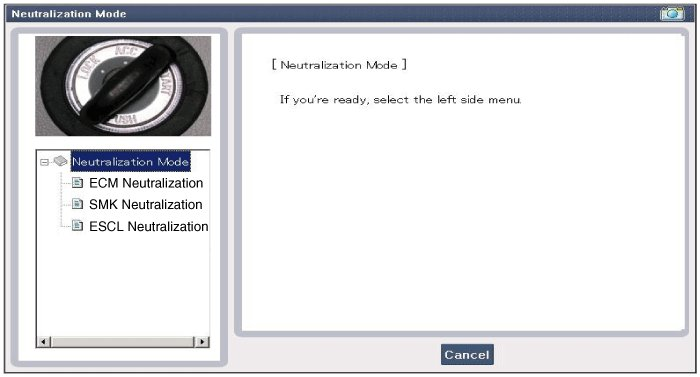
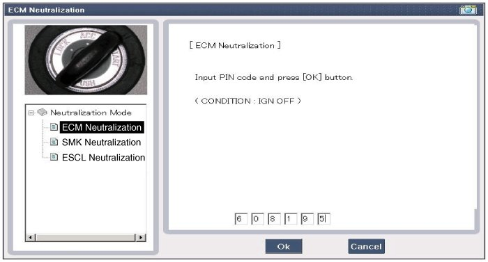
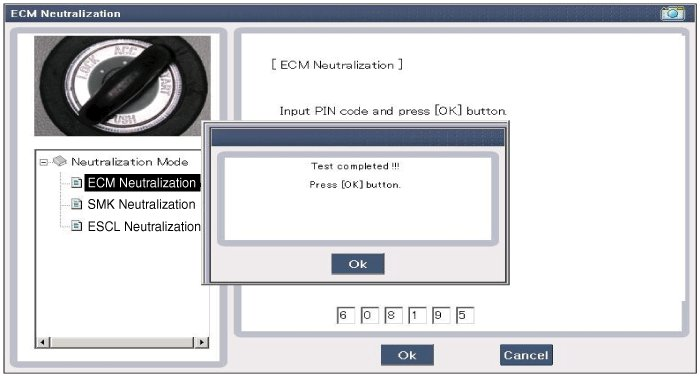
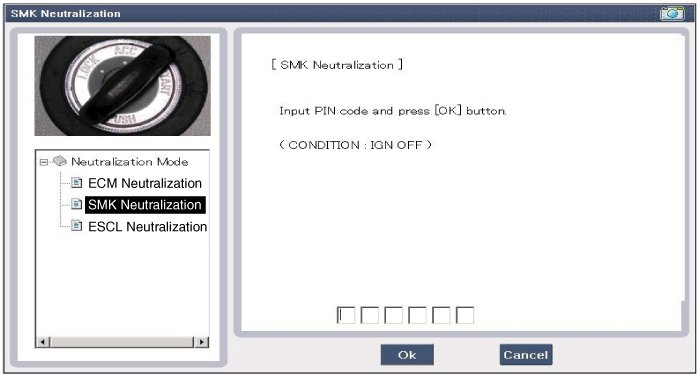
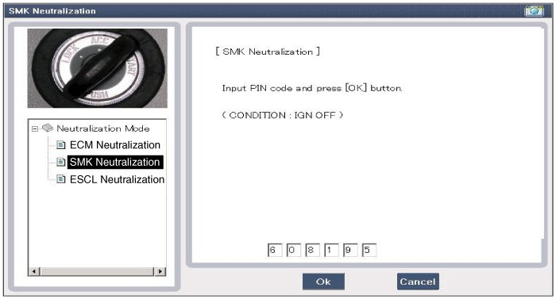
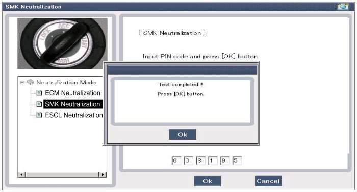
Input Switch List
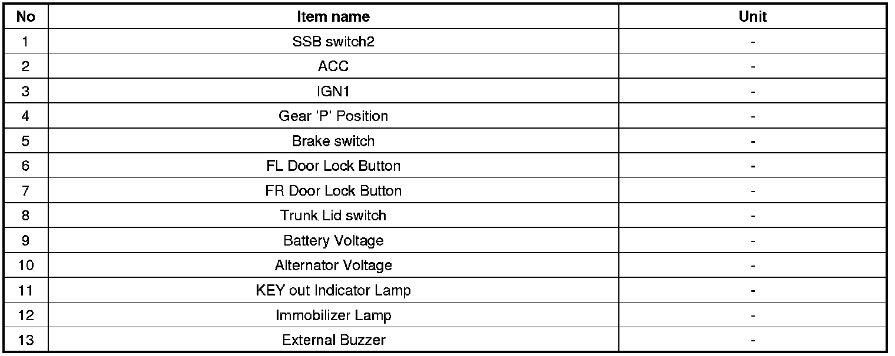
Actuator List
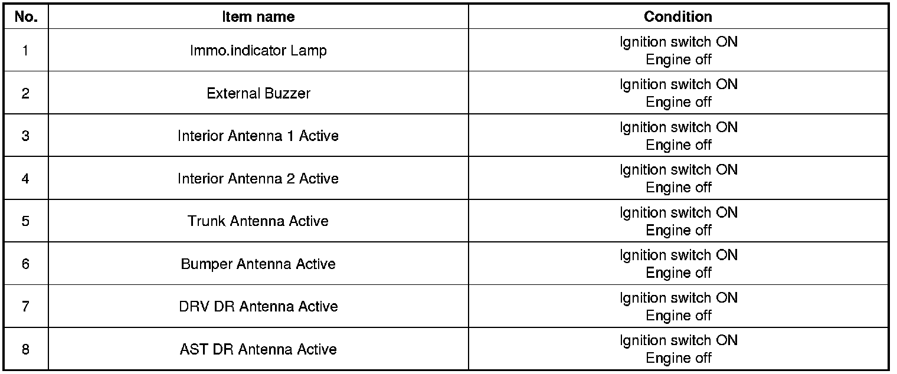